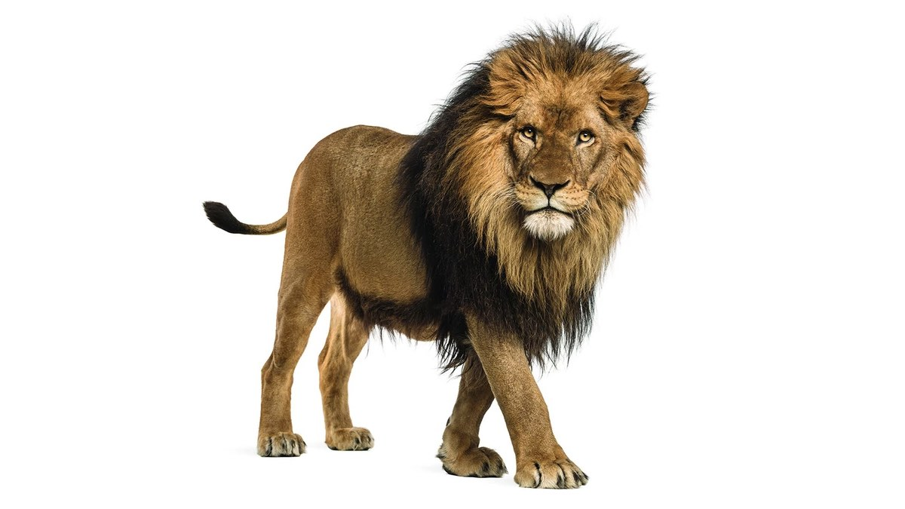
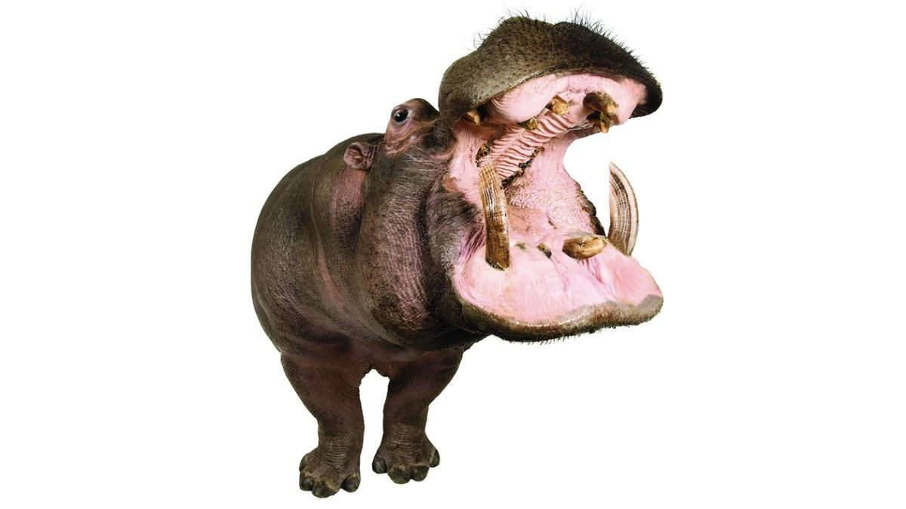
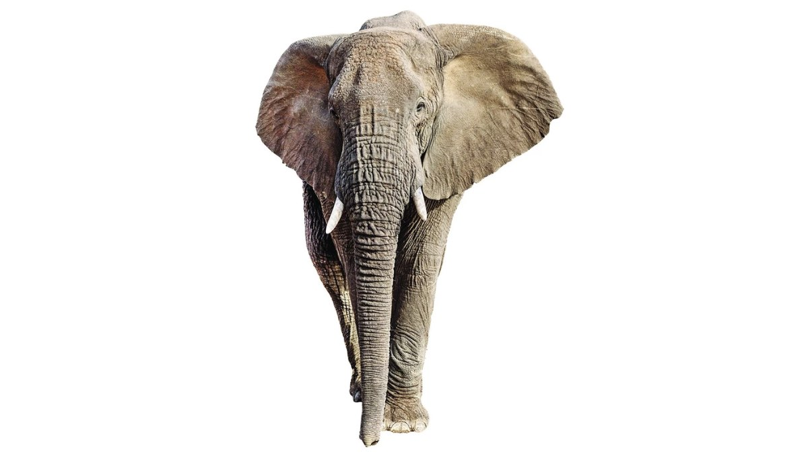
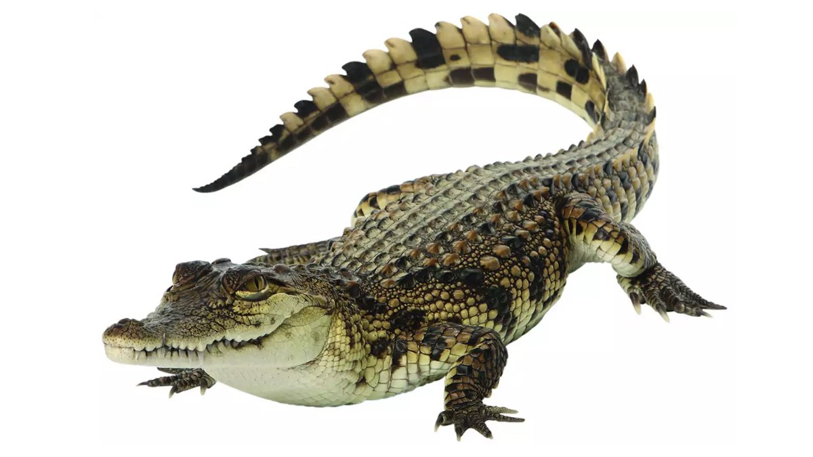
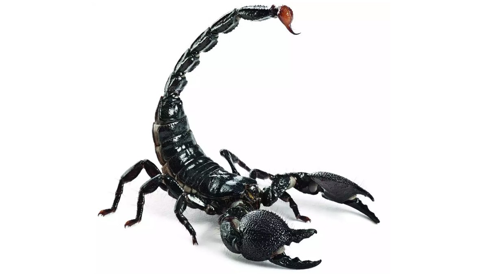
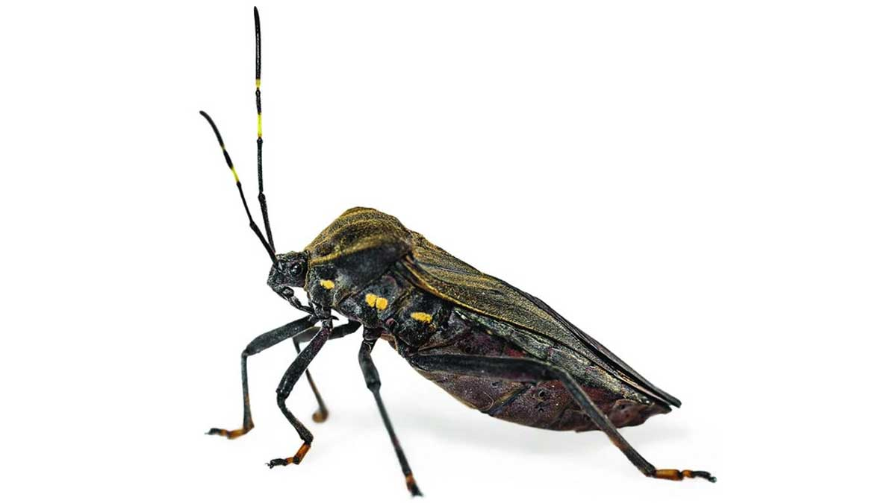
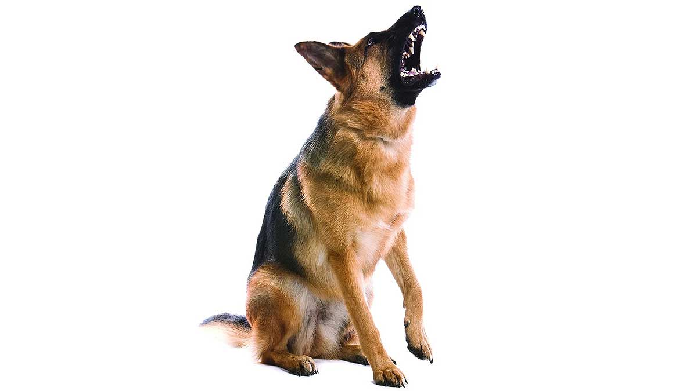
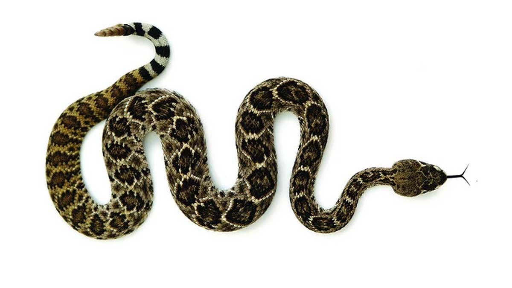
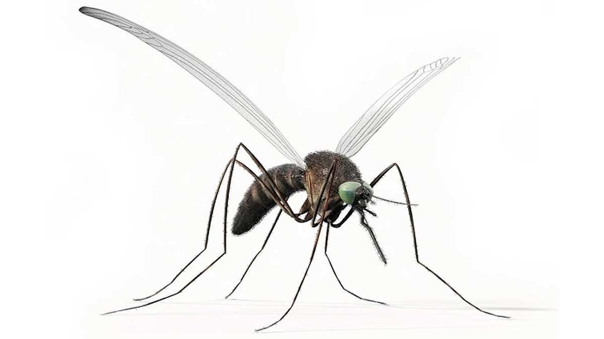

| Вид |
Описание |
Жертв в год |
Фото |
| Львы |
Эти хищники, вопреки распространенному мнению, убивают меньше всего людей в год.
|
200 |

|
| Бегемоты |
Это млекопитающее единственный современный вид рода Hippopotamus.
По словам зоологов, поведение этих животных отличается агрессивностью, причем как по отношению к своим
сородичам, так и к человеку. Бегемот считается самым опасным обитателем Африки.
|
500 |

|
| Слоны |
Слон является самым крупным животным на Земле. Несмотря на то, что
у человека это травоядное, как правило, не вызывает особого страха, на самом деле животное может быть
довольно агрессивным. Больше всего такое поведение свойственно африканским слонам.
|
600 |

|
| Крокодилы |
Считается, что аллигаторы и крокодилы обладают самым мощным укусом
из всех животных существующих на планете. В частности, в 2003 году, укус миссисипского аллигатора весом в
272 кг был измерен в 9452 Н.
|
1000 |

|
| Скорпионы |
Эти членистоногие обитают в жарких странах. Всего известно около
1750 видов скорпионов, но для человека опасен яд только 50 из них.
|
3300 |

|
| Хищнецы |
Представители этих насекомых широко распространены по всему миру.
Сок такого жука-убийцы содержит паралитический яд и ферменты, разлагающие внутренности жертвы. Укус особого
вида этих насекомых – триатомовых клопов – вызывает болезнь Шагаса. Опасность в том, что на ранней стадии
симптомы незначительны или вовсе отсутствуют.
|
10 тыс. |

|
| Собаки |
Лучший друг человека вошел в пятерку самых опасных животных на планете.
|
59 тыс. |

|
| Змеи |
Змеи обитают на всех континентах, кроме Антарктиды и нескольких крупных островов. Некоторые ядовиты, но
неядовитые представлены большим количеством видов.
|
138 тыс. |

|
| Люди |
А вот серебро достается самому Homo sapiens. |
400 тыс. |
|
| Комары |
Эти маленькие, но звонкие насекомые представляют собой самую большую угрозу для жизни человека,
поскольку часто являются переносчиками различных заболеваний.
|
725 тыс. |

|